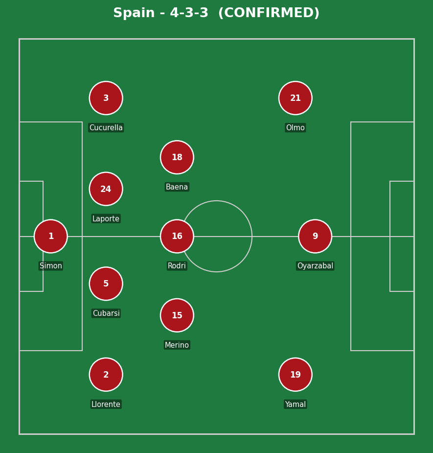
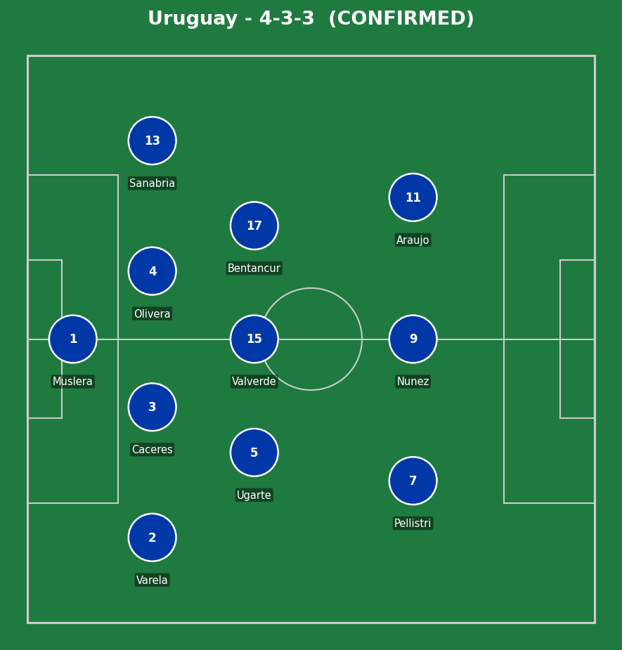
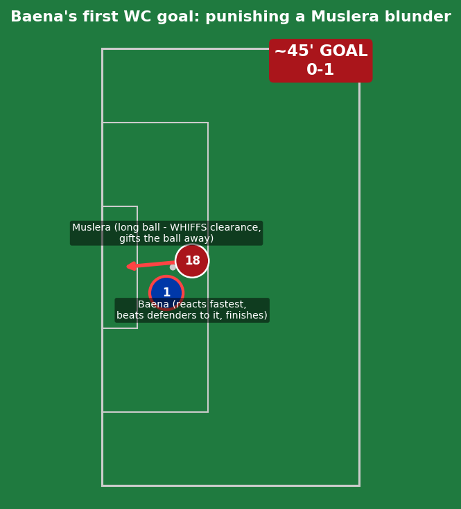
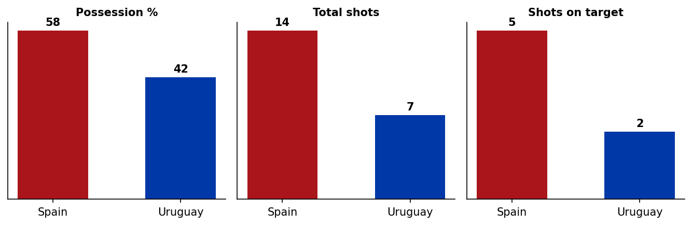
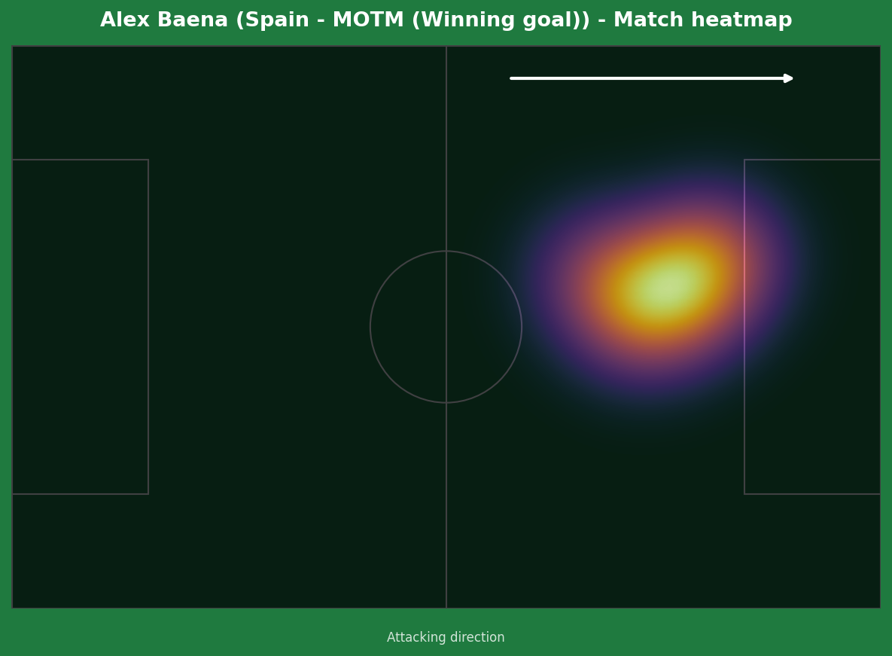
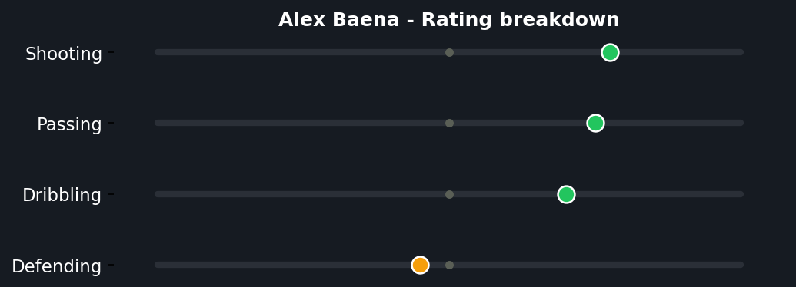

A genuine win-or-go-home occasion for Uruguay produced a tight, cagey contest that was ultimately decided by an individual mistake rather than sustained pressure. Alex Baena scored his first World Cup goal just before half-time after Fernando Muslera badly misjudged a clearance, and Spain's well-organized defending did the rest - securing top spot in Group H and ending Uruguay's tournament for the second World Cup running.


Spain (4-3-3): Simon; Llorente, Cubarsi, Laporte, Cucurella; Merino, Rodri, Baena; Yamal, Oyarzabal, Olmo. Uruguay (4-3-3): Muslera; Varela, Caceres, Olivera, Sanabria; Ugarte, Valverde, Bentancur; Pellistri, Nunez, Araujo.
This was a more cautious, structurally tight Spain than the side that ran riot against Saudi Arabia - facing a genuine must-win opponent forced a more conservative approach, prioritizing defensive solidity over the free-flowing attacking football shown earlier in the group. Even with 58% possession, clear-cut chances were rare for long stretches.
Uruguay's setup was sensible defensively but lacked a consistent attacking spark - Bielsa's side struggled to create the kind of clear sight-of-goal moments their must-win situation demanded, with only seven shots and two on target across the full 90 minutes. Federico Valverde's visible frustration at being substituted around the hour mark reflected a side that knew the performance wasn't matching the stakes.
The key moment of the match was entirely about individual error rather than tactics - Muslera's mistake, his second costly moment of the tournament, decided a contest that was otherwise heading toward a tense, goalless final 45 minutes.

A goal created almost entirely by individual error rather than Spanish quality. A long ball was played down the right toward Muslera, who had support around him but completely misjudged his attempted clearance - the ball never properly left his control. Baena reacted fastest to the loose ball, getting ahead of the recovering Uruguayan defenders to make the chance happen at all, before finishing well enough past the exposed goalkeeper. Genuine credit to Baena for the awareness and composure to capitalize, but the platform for the goal was Muslera's mistake, not sustained Spanish pressure.

A 58-42 possession split and 14-7 shot count in Spain's favor reflects clear but not overwhelming control - this was a far tighter contest than Spain's earlier group games against Cape Verde and Saudi Arabia.


Worth being honest about the nature of this MOTM award - in a match where, per several match reports, "no one was really amazing," Baena gets the nod simply for producing the goal that decided the contest. His first World Cup goal came from being alert and quick-thinking rather than any sustained individual brilliance across the 90 minutes, but in a tournament where results are all that ultimately matter, that's exactly enough.
Illustrative reconstruction based on known event locations, not raw GPS tracking data.
Baena - 7.0 ⭐ MOTM (winning goal)
Yamal - 6.0 (quiet, one poor final ball)
Simon - 6.5 (one good save late on)
Rodri - 6.5 (controlled tempo)
Muslera - 3.5 (costly error, subbed at half-time)
Valverde - 5.5 (frustrated, subbed early)
Olivera - 6.0 (good late block on Simon)
Bentancur - 5.5 (battled honestly)
Spain top Group H and advance to face Austria/Algeria's runner-up. Uruguay's World Cup ends here.
💬 Reactions & Comments